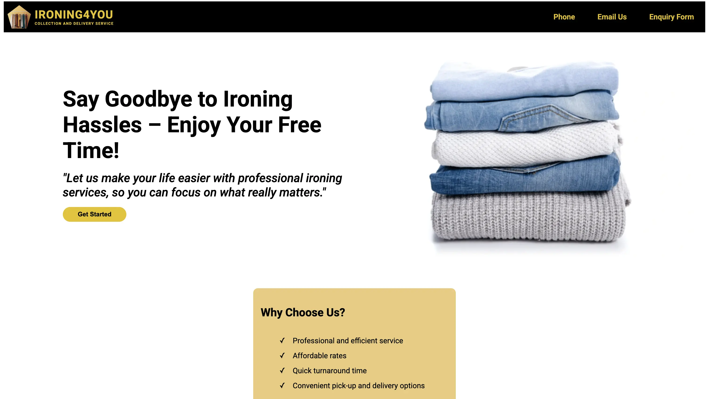
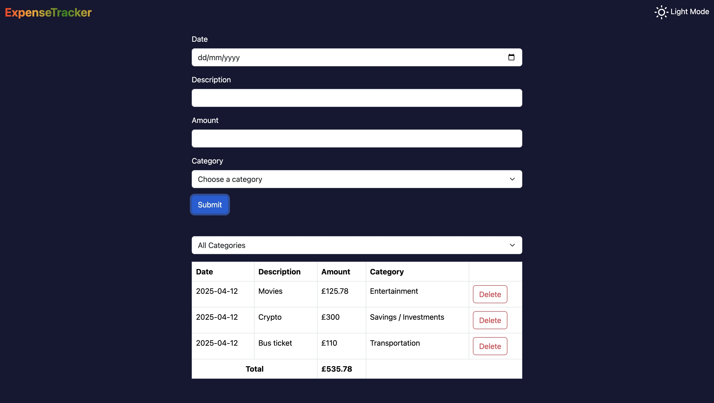
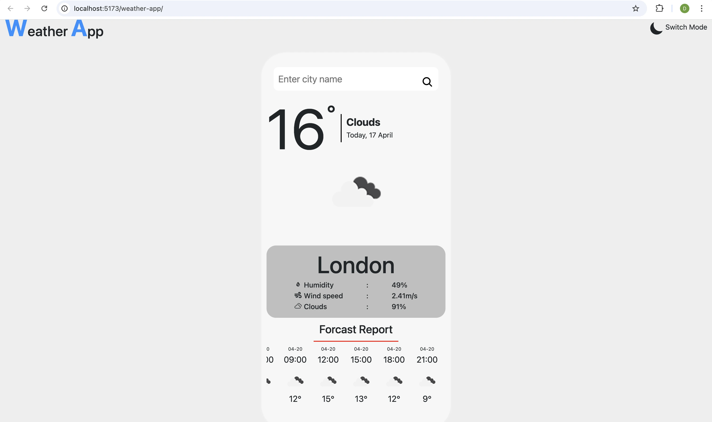
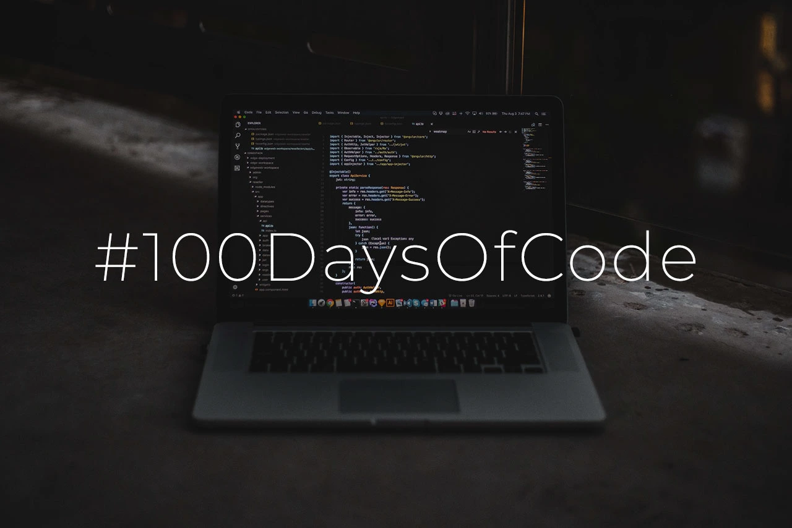
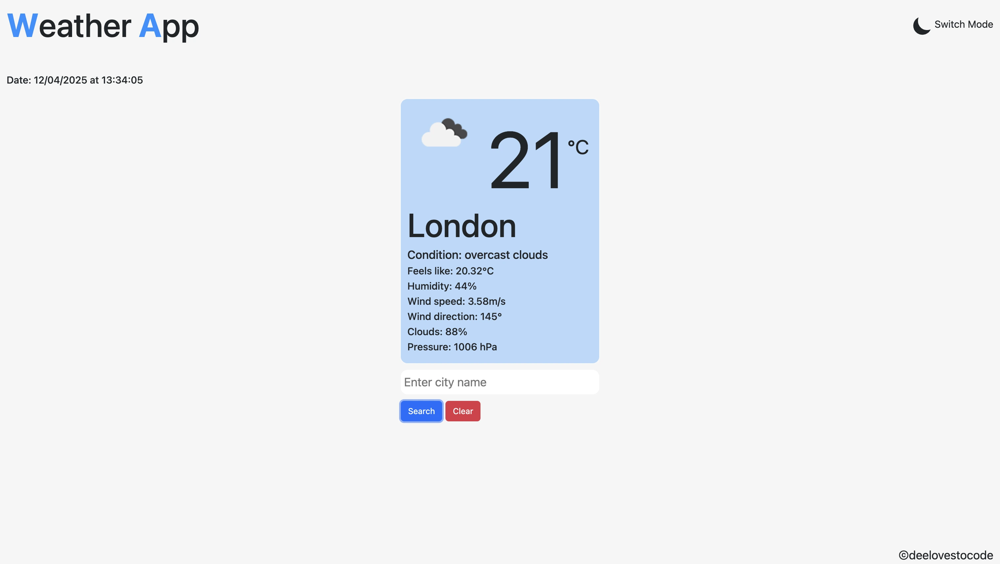
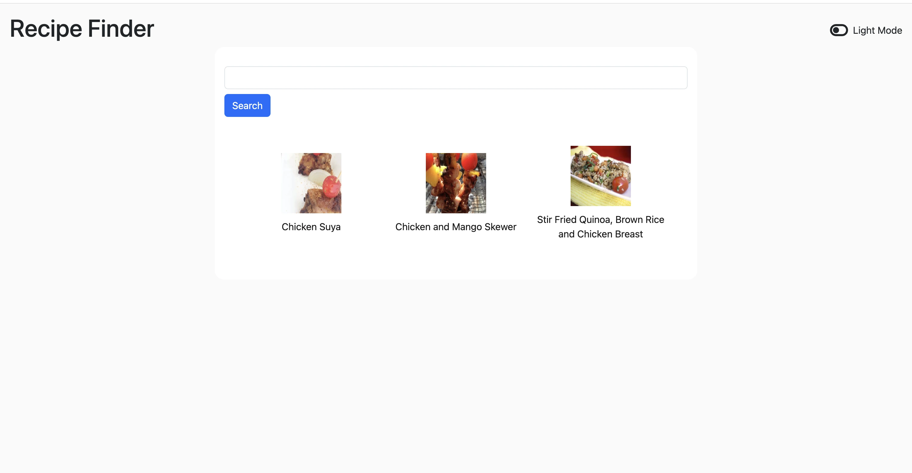

Hi, I’m Decency! With 8 years of experience as a registered nurse, I’ve worked across
various fields — ophthalmic, general surgery, medical wards, and intensive care. My journey in
healthcare taught me the value of precision, problem-solving, and continuous learning.
Along the way, I developed a deep passion for technology and how it impacts every industry. This
fascination led me to teach myself web development, where I’ve learned to craft beautiful,
functional websites. Today, I help businesses and individuals bring their ideas online, creating
websites that are not only visually appealing but also user-friendly and effective in reaching a
wider audience.
Whether you're a small business, a startup, or an individual with a vision, I’m here to help you
create a strong online presence that stands out. See
my portfolio.

Landing page built with HTML and CSS. Click image above to view.
View the project documentation (README).

Ironing4you is one of my client's website. It was built with HTML, CSS and JavaScript. Click the
image above to view.

Product landing page built with HTML, CSS and JavaScript. Click the image above to view.
View the project documentation
(README).

BMI Calculator App built with HTML, CSS and JavaScript. Click the image above to view. View the project documentation
(README).

Password Generator App built with HTML, CSS and JavaScript. Click the image above to view.
View the project documentation
(README)

TodoList App built with React / TypeScript and hosted via gh-pages on GitHub.
View the
project documentation (README)

Expense-Tracker built with React / TypeScript and axios to fetch weather data.
View the project documentation
(README)

Weather App built with React / TypeScript and axios to fetch weather data from OpenWeather.
View the
project documentation
(README)
Ready to bring your ideas to life? Let's collaborate and create something amazing together.
Contact Us
My Journey into Programming: From ICU Nurse to Tech Enthusiast
April 09, 2025

My journey into programming began on November 17, 2024. By profession, I’m a registered nurse,
and
I’ve worked in various specialties. Currently, I’m an ICU nurse and also pursuing my master’s
degree
in advanced practice nursing. I absolutely love my work—caring for critically ill patients and
striving to provide the best nursing care I can. However, I’ve also been fascinated by how
technology is transforming healthcare delivery, and I want to be part of that change.
Although I’ve only been on this programming journey for less than 5 months, I’ve already taught
myself the fundamentals of HTML, CSS, JavaScript, and am now diving into React. Using these
technologies, I’ve created static webpages and several small apps, all of which you can explore
on
my portfolio page.
The path has definitely come with its challenges. Balancing a 12-hour shift, coupled with 3-hour
daily commutes, hasn’t been easy. But despite the exhaustion, I’ve managed to stay motivated and
push through. I’m not trying to pat myself on the back, but I’m proud of the effort I’ve put in
so
far.
I’ve started this blog to document my journey—both the highs and the lows. I plan to write about
the
technologies I’ve studied, the projects I’ve worked on, and the lessons I’ve learned along the
way.
This blog will serve as a record of my progress and a way to reflect on how far I’ve come.
If you happen to come across my website or blog, I’d love to hear your thoughts. Please feel free
to
email me any suggestions,
tips, or advice on how to make this
journey smoother. I’d really
appreciate it.
Next
Coding Challenge Day 2: Building a weather app with react + typescript.
April 10, 2025

Today has been a successful day for me, and I hope the same for you! It's Day 2 of
#100DaysOfCode, and I’ve managed to develop a mini weather app. It's not deployed yet, but
that's my goal for tomorrow. Aside from coding and developing my technical skills, I've also
been focusing on improving my time management. I realized I could easily spend the whole day on
my laptop, especially after eating and showering. I tend to avoid distractions like video games,
which is a good thing, but I want to strike a better balance.
I came across a concept called the 8-8-8 rule: 8 hours of work, 8 hours of sleep, and 8 hours of
leisure with family or friends, or anything non-work related. I didn't fully implement it today,
but it's something I'm working towards. Anyway, back to the weather app I built. I’ll share my
key takeaways, challenges, reflections, and goals under the following headings:
learning point:
1. Axios & useEffect:
Axios is a popular library in React used to fetch data, similar to the fetch API in vanilla
JavaScript. I’ve used Axios before, so I’m familiar with how to fetch data and handle errors
in the console. useEffect is a React hook used to manage side effects, like fetching data.
Today, I managed to structure my app by creating a services folder with an api-client.ts and
an apiKey.ts file. This modular approach helped keep things clean and organized.
2. AbortController:
This was a new concept for me. The AbortController is used to cancel HTTP requests, which
helps prevent unwanted re-renders or remounting due to React's strict implementation. I used
it to signal the request cancellation once the data was fetched, making my app more
efficient.
3. Weather Icons:
Initially, I thought I’d just hardcode icons based on the weather type. But then, I realized
I could use an array to store the icons and dynamically reference them using the index. This
was a simple array iteration concept, but with React, I didn’t have to manually loop through
as I would in vanilla JavaScript. Also, I learned how to use as keyof typeof for arrays,
which helps avoid undefined errors when indexing.

Challenges:
I encountered some challenges fetching the data today, despite having worked with APIs
before. Each API structure is different, so it took a bit of trial and error to map my data
correctly. Some responses were arrays of objects, others were objects containing arrays and
other objects. I quickly realized that logging the response in the console was essential for
understanding the structure and ensuring I defined the correct props. It was a bit
frustrating at times, but ultimately, I made it work, and that’s what matters.
Reflection:
Looking back, I would make sure to study the structure of the data before trying to fetch it,
to better align my props with how the data is structured. There’s always room for
improvement, but I’m proud of the progress I made today. One of the highlights was using
React Hook Form and Bootstrap to create a dynamic input field, which allowed me to change
the city in the weather app without hardcoding values. I had a similar experience while
working on my expense tracker project, so it felt great to apply what I learned in one
project to another seamlessly. To me, programming is all about taking an idea, explaining it
clearly (even to yourself), and then implementing it with the right tools. If you can break
it down, you can build it.
Goal:
My next goal is to deploy the weather app and refine it a bit before pushing it to GitHub
Pages. I’m not focusing too much on UI/UX right now, but I’ll make sure to fine-tune it
tomorrow before the deployment. I’ve also got my MSc project to consider, but for now, I’m
staying motivated and pushing forward. No giving up!
Day 5 of 100 — Learning in Public & Shipping Projects
April 13, 2025
Hey folks! Day 5 of #100DaysOfCode is in the books, and I’m honestly loving the journey. It’s not
all been rosy — some bumps and moments of “wait, what?!” — but every hiccup has been a learning
opportunity.
Yesterday, I struggled a bit with implementing filters in my todo list. Today, I cracked it
thanks to ChatGPT (and some persistence). Turns out, it wasn’t that different from what I’d done
before in my expense tracker — I just didn’t connect the dots immediately. I'm still new, so it
happens!
No copy-pasting, just hands-on practice. I want to understand the logic so I don’t blank out
when trying to use it later. I usually practice during my commutes — bus rides are my classroom
these days — and it’s really helping solidify things.
Project Updates
Weather App — Done & Deployed!
I finally wrapped up my Weather App! 🎉
I used axios to fetch data from a weather API, styled it to be responsive, and handled loading/error
states. It was a great exercise in working with real-world data and building out something
start-to-finish.
Here’s a preview: 
Updated Todo List — Now with Filter Logic!
I gave my Todo List App a facelift and added filtering functionality. You can now view all tasks,
active tasks, or completed ones.
Here’s the improved UI:
What I Learned:
Filtering Logic in React
- Store your main array (in my case, todos[]) in state.
- Create a filter state (filter) to track the current view, e.g. 'all' | 'active' |
'completed'.
- Use that state to render only the relevant todos:
const displayTodos = todos.filter(todo => {
if (filter === 'active') return !todo.complete;
if (filter === 'completed') return todo.complete;
return true;
});
It sounds simple now, but it took a few tries before it really clicked. Definitely planning to
practice this more.
Experimenting with the Spoonacular API
This week I also explored the Spoonacular Recipe API. Using axios, I was able to fetch recipe
data successfully. The API itself is easy to work with, but the free plan only allows 150
requests per day, which I maxed out yesterday — so I couldn’t finish everything I planned.
😅
I’ll still go ahead and finish the UI and post a proper update once it’s ready. Here’s a sneak
peek of what I’ve built so far -
(images are from the free version — not the best quality, but
hey, it’s for learning, not commercial use!):

Reflection
Every step, no matter how small, counts. I’m proud of my progress — building real things,
learning from every bug, and staying consistent.
Next up: I’ll keep practicing filtering, dive deeper into Chart.js, and finish the
Spoonacular
UI when I get more API calls. I also have a 300-word research proposal to wrap up this week
(half done already), so it’s all about balancing my time well.
Goals for the Week
- Practice code during commutes and night breaks (on night shifts all week).
- Finish and polish the Spoonacular UI.
- Wrap up my research proposal before the 17th.
- Finish online learning modules that are about to expire.
- Weekly posts on LinkedIn/blog, daily log on Twitter.
- Maybe — just maybe — get bold enough to try a YouTube video in the future!
Documenting this journey has been so rewarding. I’ll keep showing up, sharing the process (wins
and fails), and building one project at a time.
Thanks for following along!